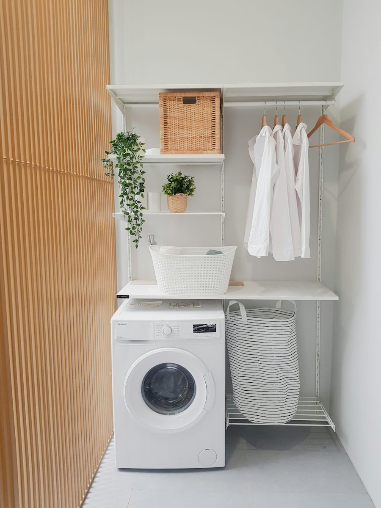
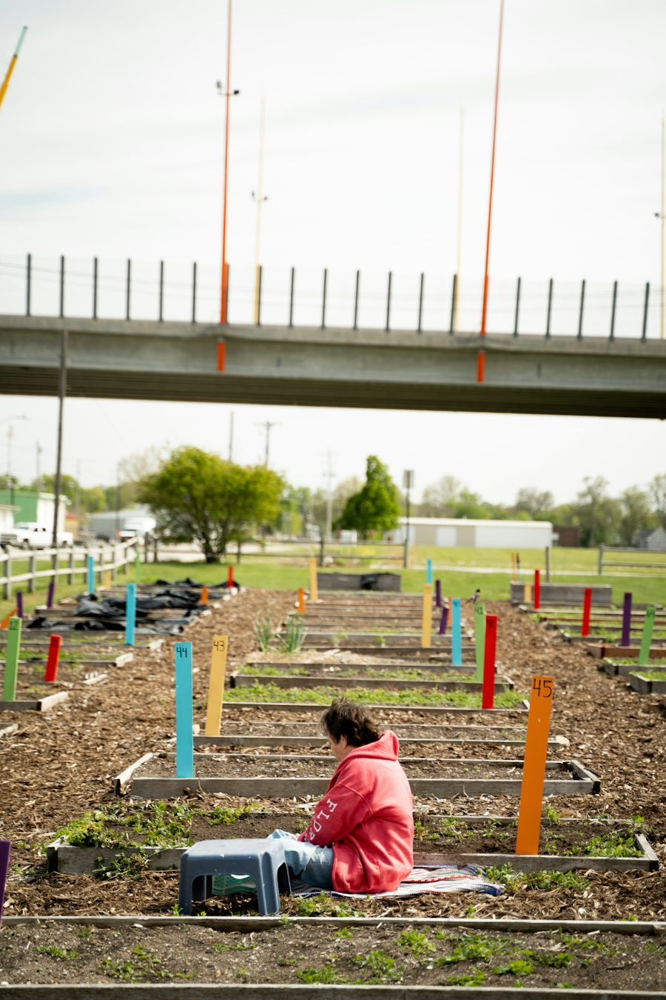
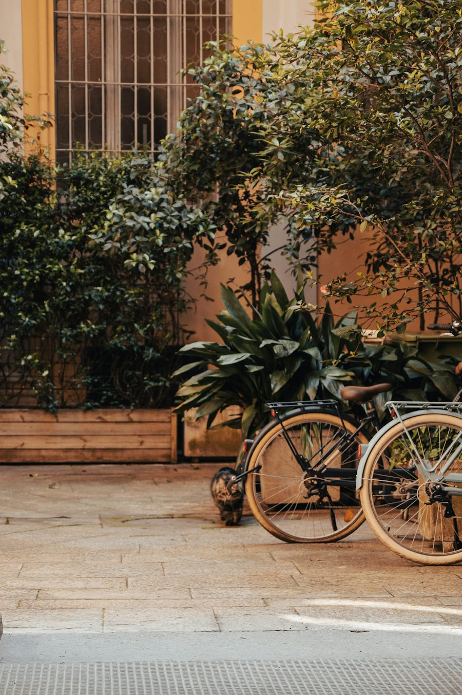

Ficha de sesión · S03 · solo docente
| § | Bloque | Min |
|---|---|---|
| 1 | Warm-up · the building | 4 |
| 2 | Vocabulary · Set Collector | 8 |
| 3 | Grammar · asked us to + Ladder Sentences | 12 |
| 4 | Listening · Take the Message | 8 |
| 5 | Speaking · Three Chips + 12 preguntas | 13 |
| 6 | Mission · Notice Board | 10 |
| 7 | Wrap-up | 5 |
| Total | 60 |
Warm-up · Six windows, six requests

Teacher notes · §1 Warm-up
Pedagógica
- Cada ventana es una petición de un vecino. El alumno abre en SU orden y dice con sus palabras qué quiere la persona (todavía sin la estructura: solo escucha tu modelo «Mr. Ortiz asked us to…»).
- Repaso activo de Elemental 3 (2 elementos): solicitudes educadas («Could you…?», «Please…») y cierre. Recast suave; sin gramática todavía.
- Grupo: cada alumno defiende cuál es la más urgente. 1:1: tú eliges otra como urgente para provocar «Why?». Máx. 4 min.
Engagement
- Pregunta real: «¿Qué te pidió un vecino o compañero esta semana?»
- Declaración de cierre: «Today I can pass a request to another person.»
Crecimiento
- «In 56 minutes you'll pass four requests — and your partner will have a problem with each one.»
- Anota cuál ventana eligió cada alumno como urgente: se compara con el §6.
Vocabulary · 12 chunks for shared spaces

1. Tap a card — then tap the SET it belongs to. 2. When a set closes, say ONE sentence that uses all three cards (no reading). 3. A good sentence earns a wildcard 🃏 to use in the mission: +30 seconds, or remove one objection.
Teacher notes · §2 Vocabulary
Pedagógica
- Set Collector (COLECCIÓN): 4 sets de 3 cartas (palabra · frase verbal · collocation). Premia la atención sostenida: cerrar un set exige entender cómo se relacionan las 3 palabras. El set cerrado se canjea por un comodín en la misión.
- Pasa por las cartas una vez (modelo tuyo → repite 2 veces). Pronunciación: package /ˈpækɪdʒ/, laundry /ˈlɔːndri/, repair /rɪˈper/, report a problem ligado.
- Regla de oro del puntaje: el comodín se gana con una oración nueva que usa las 3 cartas, dicha SIN leer. Si falla, «Not yet» y se intenta de nuevo.
- Setup ≤3 min (reglas en pantalla). Si el grupo es de 1:1 el contador de comodines es del alumno; tú compites contra el reloj.
Engagement
- Cierra en voz alta: «We closed __ sets and earned __ wildcards.»
- Pregunta: «¿Cuál de estas palabras usas más en tu edificio o colonia… y cuál nunca dices en inglés?»
Crecimiento
- Front desk y report a problem vuelven en el Bloque 2 (Clarify).
- Los comodines se usan en §6: guarda la cuenta.
Grammar · He asked us to… She told me to…
Read the chat. Which words pass on a REQUEST?

Mr. Ortiz asked us to move the bikes.
The manager told me to pick up my package.
Lena asked us not to play loud music.
Who asked you to call him?
asked / told + PERSON + to + verb
1 · asked us to
A polite request: Please move the bikes.
2 · told me to
An instruction: Pick it up before six.
3 · not to
“Don't” becomes not to + verb.
| What the person wrote | What you tell someone |
|---|---|
| “Please move the bikes.” | Mr. Ortiz asked us to move the bikes. |
| “Pick up your package.” | The manager told me to pick up my package. |
| “Please don't park here.” | Lena asked us not to park here. |
Pattern: asked / told + me · us · you · him · her · them + to + base verb. The verb after to never changes.
¿Qué es? La forma de pasar una PETICIÓN o instrucción: asked us to… («nos pidió que…») y told me to… («me dijo que…»).
¿Cómo se usa? verbo (asked / told) + persona (me, us, him…) + to + verbo base: asked us to move. En negativo: asked us not to move.
¿Para qué hoy? Para decirle a otra persona qué le piden y quién se lo pide, sin cambiar el día ni la hora.
Cuidado: «said us to» no existe. Y no se dice «asked us move» ni «asked us moving»: siempre to + verbo base.
Choose the correct form
Ladder Sentences — climb with the same sentence
Height 0 / 121. Read the message. 2. Say the first rung. Then repeat the SAME sentence and add the next piece (because · time · your reaction). 3. Press “Climb” only after you say it aloud without reading. The highest rung wins.
Mistakes at this level
Teacher notes · §3 Grammar
Pedagógica
- UN solo punto: asked / told + persona + to + verbo base. Explicación docente ≤5 min (Discover + Tool). Practice A es la única parte mecánica (≤1/3 del bloque); Ladder es meaningful: el alumno decide razón, tiempo y reacción propios.
- Límite de nivel: NO enseñes preguntas reportadas («He asked me if…»), ni instrucciones complejas, ni cambios de tiempo. La petición original es un imperativo simple.
- Ladder Sentences (ESCALADA): la MISMA oración sube 4 peldaños. Solo se sube si se dice en voz alta sin leer; se premia la altura alcanzada, no la rapidez. Si se rompe, se repite el peldaño.
- Error prioritario: «asked us move» y «said me to». Márcalos en voz alta durante §4–§6.
Engagement
- «Every time you pass a request, ask yourself: WHO asked and WHAT do they need?»
- Cierra en voz alta: «My highest rung is __ of 4.»
Crecimiento
- S4 junta said / told / asked us to en el primer checkpoint (Update Hunt).
- Anota los 3 errores más repetidos para el repair de §7.
Listening · The voice note for Mr. Ortiz

The building manager leaves a voice note. Lena listens and says she will tell Mr. Ortiz, who doesn't speak much English. You must fill in the message so he can ACT.
Listen once for the main idea, once for the details. Final audio: MP3 recorded with ElevenLabs.
Fill in the message for Mr. Ortiz
Mr. Ortiz is next to you. Tell him the three messages in 3–4 sentences.
Use: “… asked us to…” · “… asked us not to…” · “Please … before …”. Keep days and times the same.
The fire inspector asked us to keep the stairs free before Friday. The repair company asked us not to use the elevator on Saturday from eight to twelve. Please pick up the package before six today.
Listen · repeat · record your best
Teacher notes · §4 Listening
Pedagógica
- Take the Message (OCULTAMIENTO, mediación): 2 hablantes — Mr. Patel (inglés indio, hablante no nativo, ≥1/3 de guiones con acento no nativo) y Lena (inglés canadiense). Guion total de 150 palabras (rango B1 120–200). Marca [PARA GRABAR]: sin MP3 suena la voz del navegador.
- Ciclo: (1) escuchan para la idea principal (¿quién pide qué a quién?); (2) escuchan para detalle y llenan el formulario como si Mr. Ortiz no hubiera oído nada; (3) MEDIACIÓN: se lo dicen a Mr. Ortiz con «asked us to / asked us not to». Se mide en lo que Mr. Ortiz podría hacer, no en traducir palabra por palabra.
- Answer key: M1 fire inspector · keep the stairs free · before Friday. M2 repair company · not use the elevator · Saturday 8 to 12. M3 front desk · pick up the package (4B) · before 6 p.m. today.
- Cumple: ≥3 elementos de léxico (package, pick up, front desk, under repair, report a problem, building manager) y asked us to / told me to ≥2 veces sin subrayarlo.
Engagement
- «Would YOU understand this voice note on first listen?» — pide un ejemplo real de mensaje de voz confuso.
- Cierra en voz alta: «Mr. Ortiz needs to __ before __.»
Crecimiento
- El patrón «escuchar → llenar → pasar a otra persona» es la base del Bloque 2 (Clarify) y de S12.
- Anota cuántos alumnos usaron «asked us not to» en la mediación.
Speaking · Spend your three chips
1. Every person has 3 chips. 2. A real turn costs one chip: at least 3 sentences, with a detail. 3. Spend ALL your chips before the last question. Nobody takes two turns in a row.

Teacher notes · §5 Speaking
Pedagógica
- Three Chips (ELIMINACIÓN): cada persona tiene 3 fichas; un turno real cuesta una ficha (≥3 oraciones con un detalle). Hay que gastarlas TODAS antes del cierre: iguala al dominante y al callado sin señalar a nadie.
- Usa las 12 preguntas como disparadores (elige 8–9 según las fichas). Nadie toma dos turnos seguidos; los compañeros hacen UN follow-up. Grupo: equipos de 3–4 en breakout, cada equipo con su panel. 1:1: tú también gastas 3 fichas (modelo de turnos).
- Regla de oro del puntaje: la ficha se gasta por PRODUCIR (≥3 oraciones), no por hablar rápido. Si el turno es de una palabra, «Not yet».
- Anota 2 aciertos y 3 errores repetidos (¿asked us move? ¿said me to?) para el repair de §7. Cierre obligatorio: el equipo declara en voz alta cuántas fichas gastó cada quien.
Engagement
- Pregunta 12 abre debate: «¿Buen vecino = ayuda o da espacio?»
- Cierra en voz alta: «We spent all our chips — __ turns in total.»
Crecimiento
- Registra cuántos segundos habló seguido cada alumno sin español (SPK-08 más adelante).
- Compara con el §1: ¿qué petición elegiría ahora como más urgente?
Mission · The Notice Board
Four requests. Four neighbors who each have a SECRET problem.
When you DELIVER: pass the request (“Mr. Patel asked us to…”) and, if there is a problem, suggest the solution on your card. When you RECEIVE: say your secret problem. Then the deliverer confirms: “So you will…, right?”
Group: pairs. Student A uses Set A, Student B uses Set B. Don't show your screen!
1:1: you use Set A, the teacher uses Set B. Same four cases.
Fill it in together — then check
Teacher notes · §6 Mission
Pedagógica
- Misión funcional con rol oculto (ROL OCULTO): en cada caso uno entrega la petición y el otro tiene un problema secreto. Se resuelve con UNA acción simple (la solución está en la tarjeta del que entrega): no hay negociación larga (límite del nivel).
- Tarjetas ≤25 palabras. 30 s de lectura en silencio por caso y luego habla sin mirar. Marca cada jugada SOLO si se dijo en voz alta: (1) entregar con asked us to / told me to; (2) decir el problema; (3) confirmar «So you will…, right?».
- El tablero de resultado verifica dos cosas por caso: quién pidió (fuente) y la acción acordada. Éxito: 8/8 y 12 jugadas.
- No interrumpas: el feedback va en §7. 10 min: ≈2.5 min por caso.
Engagement
- Anuncia el resultado: «__ of 8 fields, __ of 12 moves. Mission complete!»
- «If your partner does the right thing, the message worked.»
Crecimiento
- S4 (Update Hunt) junta said / told / asked us to y añade el informe oral de 2 minutos.
- Registra: jugadas, comodines usados y si alguien dijo «said me to».
Wrap-up · Better the second time
✓ Success
↑ Upgrade
✎ Repair
↻ Next use
Pass on one real request today with “asked me to…”.
60 seconds · 5 questions
Today I can…

You can pass on a request and confirm what to do.
Homework: write 3 REAL requests you received this week: “My boss asked me to… / My friend asked us not to… / Someone told me to…”. Next: Session 4 · Update Hunt.
Teacher notes · §7 Wrap-up
Pedagógica
- Máx. 2 aciertos y 3 correcciones de alto valor (usa tus anotaciones de §3–§6). Exit quiz en voz alta antes del clic.
- Tarea: 3 peticiones REALES → 3 oraciones. Se revisa al inicio de S4 (sin datos personales sensibles).
Engagement
- Declaración final: «Today I can pass on a request and confirm the action.»
- Compara con §1: «Minute 1: you opened windows. Minute 58: you pass requests and check them.»
Crecimiento
- Registra: altura de los Ladders, formulario de Take the Message, fichas gastadas, jugadas de misión.
- «Next session: Update Hunt — your first checkpoint. You hunt for information and report it in two minutes.»